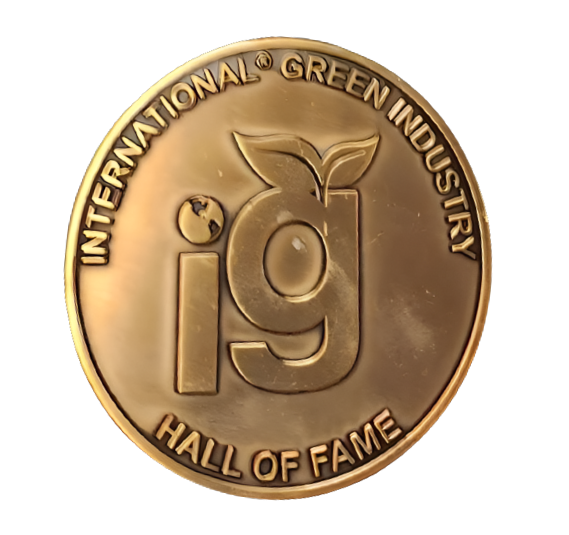

Our Impact & Community
The people, organizations and communities connected to Green2Gold, and what we've achieved together.
Timeline
- 1970Green2Gold begins as a pioneering impact incubator. Alan Tratner helps establish the first Earth Day and serves on the staff of Environmental Quality Magazine.
- 1971Inventors Workshop International (IWI) established.
- 1972Participation in the First International United Nations Conference on the Human Environment, Stockholm, Sweden. The Environmental Education Group (EEG) is founded, with supporters including Nobel prize winner Dennis Gabor.
- 1970s–80sUltimate Crisis and Solutions for Survival seminars across the USA; an environmental and alternative energy delegation to the former Soviet Union for the Citizen's Ambassador Program; Energies Journal, Geothermal Energy Magazine and Geothermal World Directory.
- 1986Support for the Los Angeles Central Library after the fire, including donations to the Save the Books campaign.
- 1989Inventor Lance Ayon joins IWI with the Puppet Kooler, the start of a long inventing career.
- 1990sGreen Business Conference of the ECO EXPO; the first national Eco-Inventors and Eco-Entrepreneurs Workshops; New Environmental Technologies Exhibits at Eco Expos across America.
- 1993Free invention and small business workshops ("Cashing In On Your Great Ideas™") begin at the Los Angeles Central Public Library, up to 8 times a year.
- 2012Alan Tratner inducted into the International Green Industries Hall of Fame, honored for Lifetime Achievement.
- 2016–2019Invent! The Future blog, FAQ and Co-Venture education series; Opportunity Expo 2019.
- April 22, 2020Planetary Summit presented for Earth Day's 50th anniversary.
- 2022Genesis EARTHCOIN NFT released for Earth Day 2022.
- 2023Build Back Green global summit & fundraiser for the Maui fire.
- 2024Green2Gold 2024 Press Release; Regeneration World Magazine inaugural issue.
- 2025Green2Gold White Paper; Harm-Free Emporium 2024/2025 Update; Regeneration Global Magazine.
- 2026SuperGreen Live 2026.

Environmental & community impact
Green2Gold produced and cosponsored the Clean Business Investment Summit, is cosponsor and producer of Entrepalooza!, and created a California Climate Resources Guide for the state covering climate mitigation, adaptation, and resilience. The Plastic-Free Packaging Alliance has prevented millions of tons of plastic from entering landfills and oceans.
What Green2Gold Inventors, Media, Government, & Alliances Say About Our Services & Programs
From inventors & entrepreneurs
"With the guidance of Professor Alan Tratner I am able to tackle what once seemed impossible, such as trademarks and patents. I have access to resources and information that were once out of my reach. I now am able to tap into collaborations & potential partnerships that may create lasting opportunities for the future of my legacy company."
"I definitely recommend Green2Gold to everyone I know. If you are starting a business or a non-profit and need a group of people to hold your hand through the legal and start-up process, then I recommend you give them a call. I feel blessed I found them online."
Dan Karpf – Founder and CTO
I've been involved with renewable energy new technologies and inventions in that arena for eight years. It has been both a very interesting road and also a very challenging road especially in the last four years. I have had to learn both about business, patents, and promotion in addition to growing in my technical fields and perfecting the technical applications.
I have been involved with the Green2Gold Business Incubator and inventors workshop for the last year of those eight years and I want to give a huge shout out to the assistance and focus that Alan Tratner and the Incubator program have provided for me.
As an inventor, it can become a far to solitary task to focus first on developing your inventions and then . . . . marketing them. Alan has helped me to develop a healthy and strong discipline in 1st properly vetting and analyzing my work, and then 2nd vigorously stepping out to meet, communicate with and then work together with the many people and organizations that are available to assist you in your expanded development and commercialization stages leading to funding.
As an inventor, it is far to easy to remain isolated and protective of your brainchildren so that they don't get to see the light of day that they need. Alan helps you through that phase in a very hands on and experienced way. He gives greatly of his time and responds to questions and e-mails. That hands on availability is unique and most valuable to inventors . . . . and it has been appreciated in my efforts as well.
I recommend checking out the Green2Gold offering and methods to inventors who would like to move forward with their work, understandings, and commercialization efforts.
Lance Ayon – Inventor
I met Alan Tratner in 1989 when I had an idea for a fun novelty drink holder called the Puppet Kooler. I joined the Inventors Workshop International, and what is now Green2Gold and was helped and coached in getting my idea developed and protected. I was introduced to a gentleman on their Board of Directors who became a mentor and eventually business partner. We developed a prototype, applied for a patent and created a corporation. We then created concept drawings and with these drawings and prototype in hand we attended our first trade show.
The trade show gave us great exposure and interest from many big box store chains which resulted in a large Purchase Order. This was a major step in finding Angel investors. We utilized our Patent as our equity investment and were able to obtain $500,000.00 in funding to get our product and company started.
This was an Education of many types for me because it exposed me to the tools that I would need to invent and develop all my future ideas. Once you have been bitten by the Entrepreneurial bug you will always want to develop new ideas and products.
I was able to travel and build a factory in Tijuana and Guadalajara Mexico and then traveled to Hong Kong China to oversee our product production with a large toy manufacturer. Upon returning the market had changed and my company wanted to go in one direction while I believed it should go another direction and I resigned my position and sold my stock interest and walked away with a large sum of cash and free to develop new ideas.
My next idea was similar to the 1975 Pet Rock idea that became a very financially rewarding fad. I developed the CyberKids later changed to the Hackers, a group of figurines that were created as part of the computer virus craze. I eventually landed an animation deal with Hanna Barbera Cartoons to develop a Saturday morning kids program. I was paid $10,000.00 up front licensing fee with a royalties contract. Unfortunately our deal never came to fruition due to financial difficulties and the absorption of the studios by other companies in 2001. We did manage to get the Hackers into several retailers and still make some money.
My idea train continued on with Guardian Angel Bears, Magical Monster Guardz, and a patent for an Avocado Cutter called the Slice-N-Scoop where we sold over 500,000 units to clients such as McCormick Schilling, California Avocado Commission and Crate N Barrel. We continue to sell these via our online website. I also developed a product called The Casper Safety Night Walker that entered into a two year licensing deal for the Casper the Friendly Ghost franchise which helped me land a $25,000.00 up front fee with royalty guarantees with a medium sized toy manufacture who unfortunately could not develop the product idea successfully for the market place.
I made some money and lost some money and took time off from inventing. With the advent of the internet and Alibaba as a direct resource to China manufacturers I was now able to develop and have direct contact with manufacturers in China in real time verses weeks of having to fax and send back in forth material, drawings etc via Federal Express…very time consuming and costly.
I decided to develop 3 new ideas and I am currently developing and getting ready for market two (2) novelty wedding coins the Decision Maker Coin and the Lucky Mini Penny as well as a new style Body Board or Boogie Board called the Wave Cutter.
I cannot thank Alan Tratner enough for giving me that first taste of the entrepreneurial world and the excitement of having an idea and watching it develop into a tangible product.
The education I received in developing a product from concept drawings to product to packaging and marketing is a true life lesson and love of spirit to create.
The difference between people who have an idea and an entrepreneur is that the entrepreneur will take that idea and develop it as risky as it may be.
Thank you again Alan for giving me a great journey in life.
From partners, government & organizations
"I especially want to thank your outstanding organization and its members for the efforts you are making for your community and for your country. Please be assured of my confidence in your continuing success in the years to come."
"Alan Tratner and Green2Gold fight global warming through private enterprise…he urges one and all to step right up to the greatest show on earth: human ingenuity put to the task of saving the world…"
Victor Parker – District Director, Los Angeles, District Office
Dear Small Business Leaders, Friends and Supporters:
On behalf of the U.S. Small Business Administration (SBA), Los Angeles District Office, I acknowledge the efforts of Environmental Education Group (EEG) to bring smart, consensus-driven small business growth to the Lompoc, California area through the proposed California Space Enterprise Center (CSEC).
EEG's stated mission to "facilitate, boost and encourage private space enterprise" as well as "educate the public regarding space enterprise" and to "include federal government actions in the local area –past, present and future" corresponds with the SBA's core mission of helping American's start, build and grow businesses through networks of partnerships with public and private organizations.
In addition, Alan Tratner, Chairman of the Board of EEG, has a long-standing relationship with the SBA by providing valuable workshops to the small business community. Mr. Tratner, a respected serial entrepreneur, and Los Angeles SBA District Office staff have worked together to deliver top-notch business programs and services. Through Mr. Tratner's, well-established and attended Green2Gold Workshops, thousands of entrepreneurs and inventors have gained information on various capital programs including SBA Loan Programs.
The SBA Los Angeles District Office looks forward to working with EEG on its stated goals of inspiring students in the sciences; educating and entertaining the public regarding space enterprise; and fostering private space enterprise in the Lompoc and Vandenberg Air Force Base area through the proposed CSEC.
It's an exciting time to be serving aspiring and existing small business owners all over the country but especially here in Southern California. For some time, businesses of all sizes have been wondering when the old economy is going to come back but the more appropriate question is – Who is going to create the new economy? I firmly believe individuals like Mr. Tratner and organizations like Environmental Education Group will help create this new economy and produce jobs to Southern California.
Andy Lipkis
Some of the greatest and most beneficial things in our world have come from people's dreams. Such dreams are the fuel we need as we seek to improve our world and quality of life.
However, pursuing ones dreams and hopes can be a very tough, discouraging and disheartening process filled with challenges and short-term defeats. How do leaders, visionaries and everyday people become effective in pursuing and making their dreams become a reality?
After 30 years of providing visionary leadership to TreePeople, a non-profit organization that I founded as a teenager, I wanted to take our work to a whole new level. But I felt that that I had a number of things holding me back. I had hit similar plateaus in the past and turned to business advisors for coaching, but this time I happened to meet Lielle Arad who offered a values-based approach to coaching. We began working together and I found her support to be very effective.
We worked together on a weekly basis for two and a half years. During that time I identified a number of old patterns, assumptions and unexamined attitudes I'd placed on myself. I worked with Lielle to remove or get beyond those self-imposed limitations. I found myself both more effective and happier, and saw the quality and impact of my own work and that of our organization improve profoundly. Although Lielle is young, her gentleness, insight and skill make her an unusually effective coach and a joy to work with.
TreePeople is now working with some of the largest public works and infrastructure agencies in the United States, in designing and implementing new ways to manage and improve the environment for large cities.
I highly recommend and commend Lielle in her role as a coach.
Youngsil Lee – Senior Librarian
Mr. Alan Tratner and Cashing In On Your Great Ideas™ are active partners with the Los Angeles Public Library in offering free invention and small business workshops to the community. These programs, which are offered up to 8 times a year, have attracted a diverse and appreciative audience at the Central Library since 1993. With topics that range from business online marketing to invention workshops and sustainable enterprising, programs offered by Cashing In provide local inventors and entrepreneurs with a pathway to success.
Alan Tratner and his organization, Inventors Workshop International/Green2Gold, have been strong supporters of the Los Angeles Public Library for nearly 30 years. They were involved with helping the Central Library after the 1986 fire and donated funds to the Save the Books campaign that followed. The Library's partnership with Mr. Tratner, the Inventors Workshop International, and Cashing In On Your Great Ideas™ has been productive and beneficial to our patrons and we look forward to working with them for many years to come.
The people behind Green2Gold
Leadership
Prof. Alan Arthur Tratner, International Director, and Lielle Arad, Chairman of the Environmental Education Group.
Leadership profiles →Advisors & honorary directors
Founding honorary directors and consultants including Nobel laureate Dr. Dennis Gabor, Steve Allen, Thomas Bradley and Beatrice E. Willard, Ph.D.
Full list →Volunteers & project contributors
Experts, partners and volunteers power every incubator, workshop and initiative, from Build Back Green to the Environmental Education Group.
Volunteer with us →Projects and their outcomes
Slice-N-Scoop
Over 500,000 units sold to clients such as McCormick Schilling, California Avocado Commission and Crate N Barrel (Lance Ayon).
Puppet Kooler
Prototype, patent, trade show and a large purchase order led to $500,000 in angel funding (Lance Ayon, 1989).
Plastic-Free Packaging Alliance
Prevented millions of tons of plastic from entering landfills and oceans.
Build Back Green
Global summit & fundraiser for regenerative re-design after the Maui fire.
Learn more →Community participation
Join a pathway, volunteer, partner with us, or bring a Green2Gold incubator to your community.